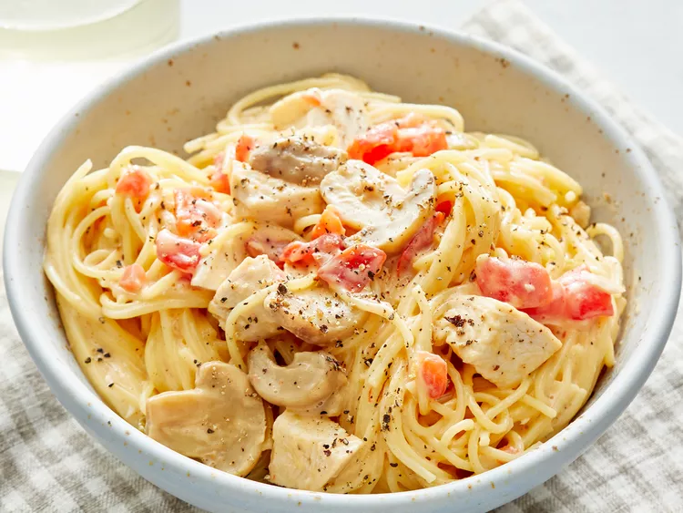

Quick and Easy Chicken Spaghetti

This chicken spaghetti recipe is quick and easy to make, yet is hearty and delicious. It's a great way to use leftover chicken!
Chicken Spaghetti Ingredients
These are the ingredients you’ll need to make this easy chicken spaghetti recipe at home:
- Pasta:This quick recipe starts with a package of angel hair pasta. You can use regular spaghetti noodles if you prefer.
- Chicken:Use two cups of cooked chicken breasts. If you’re really in a rush, use leftovers or rotisserie chicken.
- Canned soup:A can of condensed cream of chicken soup gives the sauce a rich and creamy texture.
- Canned tomatoes:You’ll need a can of diced tomatoes with green chile peppers for the flavorful spaghetti sauce.
- Cheese:Cubed packaged processed cheese is a convenient ingredient that ups the creaminess factor.
- Mushrooms:Chopped jarred mushrooms lend flavor and texture. If you like, you can also add other veggies (like onions or bell peppers).
- Seasonings:Season the chicken spaghetti with salt and pepper to taste. If you prefer a spicy spaghetti, add some crushed red pepper.
How to Make Chicken Spaghetti
You’ll find the full, step-by-step recipe below — but here’s a brief overview of what you can expect when you make homemade chicken spaghetti:
- Cook the pasta, drain it, then return it to the pot.
- Add the remaining ingredients to the pot.
- Cook, stirring frequently, until the cheese is melted.
Ingredients
- 1 (12 ounce) package angel hair pasta
- 2 cups chopped cooked chicken breast
- 1 (10.75 ounce) can condensed cream of chicken soup
- 1 (10 ounce) can diced tomatoes with green chile peppers
- ¾ (8 ounce) package processed cheese, cubed
- ½ (4 ounce) jar sliced mushrooms, drained
- salt and pepper to taste
Directions
Step 1
Bring a large pot of lightly salted water to a boil. Cook angel hair pasta in the boiling water, stirring occasionally, until tender yet firm to the bite, 4 to 5 minutes. Drain pasta and return it to the pot.
Step 2
Add chopped chicken, condensed soup, diced tomatoes with chile peppers, processed cheese, mushrooms, salt, and pepper.
Step 3
Cook and stir over low heat until cheese is melted and mixture is heated through, about 5 minutes.